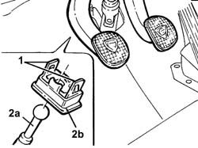
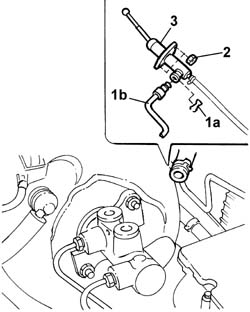

1820B20 MASTER CYLINDER (pump) - R.R. and Bleed air
- Path
- Procedures > 18 CLUTCH > 1820 clutch release controls > 1820B CLUTCH RELEASE HYDRAULIC OPERATION > 1820B20 MASTER CYLINDER (pump) - R.R. and Bleed air
- Kind
- repair procedure (removal / refitting; the operation number is the code)
- Applies to
- engines: 2.0 TB, 2.4 20V, 2.4 JTD 10V, 2.4 JTD 20V; all production periods
- Interactive page
- https://sloeber94.github.io/elrnDB-lThss/en/#/78113
Applies to: engines: 2.0 TB, 2.4 20V, 2.4 JTD 10V, 2.4 JTD 20V; all production periods
 Removing
Removing
 Refitting
Refitting- Disconnect the negative battery terminal.
Applies to: engines: 2.4 JTD 10V, 2.4 JTD 20V; all production periods
Applies to: engines: 2.0 TB, 2.4 20V, 2.4 JTD 10V, 2.4 JTD 20V; all production periods
See in Op. 7040D50 ENGINE COMPARTMENT UPPER SOUND INSULATION SHIELD - R.R.
See in Op. 3330C40 brake fluid reservoir plug - r + r
See in Op. 3330C30 brake fluid reservoir - r + r and wash inside
See in Op. 7055B54 PROTECTION/GUARD under engine - R.R.
1. Fully depress the clutch pedal, then release the two clips retaining the master cylinder to the pedal.
2. Release the master cylinder push rod (2a) from the fastening device (2b).

Applies to: engines: 2.0 TB, 2.4 20V, 2.4 JTD 10V, 2.4 JTD 20V; all production periods
1. Remove the fastening spring (1a) and disconnect the rigid pipe (1b)
2. Undo the nuts fixing the master cylinder to the bodyshell.
3. Extract the master cylinder complete with flexible pipe from the reservoir to the master cylinder.

Applies to: engines: 2.0 TB, 2.4 20V, 2.4 JTD 10V, 2.4 JTD 20V; all production periods
Refitting
Removing- Fit the master cylinder, complete with flexible pipe from the reservoir to the master cylinder, and secure it by tightening the nuts to the recommended torque.
 | Value - daNm | Fastening | Component | Ø |
|---|---|---|---|---|
. | 1.5 | Nut | CLUTCH FLUID MASTER CYLINDER | M8 |
- Fit the rigid pipe in the special housing and secure it repositioning the spring in the special housing.
- Engage the master cylinder push rod clip in the clutch pedal.
- When the clutch pedal is fully depressed it should connected to the master cylinder push rod.
See in Op. 7055B54 PROTECTION/GUARD under engine - R.R.
See in Op. 3330C10 MASTER CYLINDER (PUMP) - R.R. - Bleed air from brakes separately
-
See in Op. 0010T67 HYDRAULIC CLUTCH SYSTEM - Bleed air
-
See in Op. 3330C40 brake fluid reservoir plug - r + r
See in Op. 7040D50 ENGINE COMPARTMENT UPPER SOUND INSULATION SHIELD - R.R.
Applies to: engines: 2.4 JTD 10V, 2.4 JTD 20V; all production periods
Applies to: engines: 2.0 TB, 2.4 20V, 2.4 JTD 10V, 2.4 JTD 20V; all production periods
- Connect the negative battery terminal.
Topics linked from this page (7)
- 0010T67 HYDRAULIC CLUTCH SYSTEM - Bleed air
- 1016A10 SOUND-PROOFING COVER - R.R.
- 3330C10 MASTER CYLINDER (PUMP) - R.R. - Bleed air from brakes separately
- 3330C30 brake fluid reservoir - r + r and wash inside
- 3330C40 brake fluid reservoir plug - r + r
- 7040D50 ENGINE COMPARTMENT UPPER SOUND INSULATION SHIELD - R.R.
- 7055B54 PROTECTION/GUARD under engine - R.R.